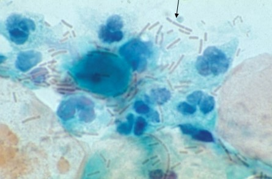
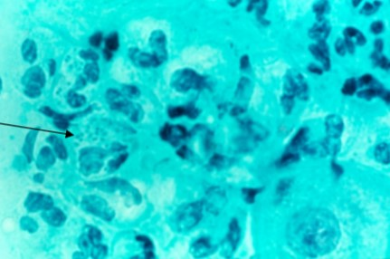
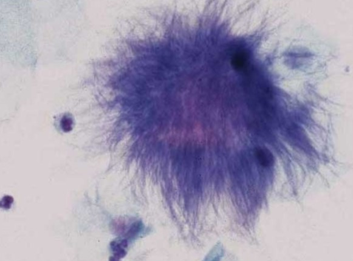
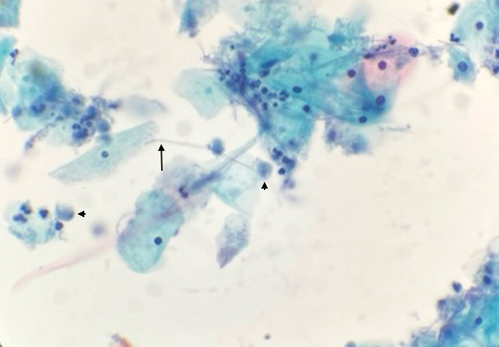
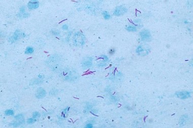
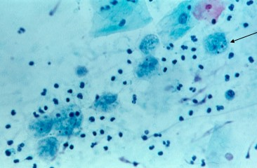
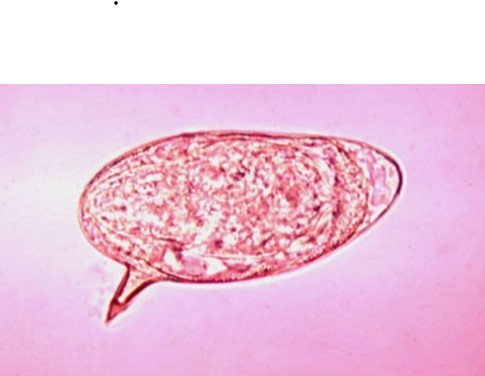
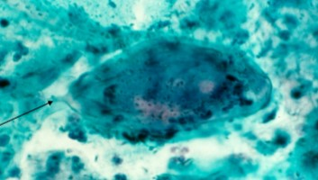
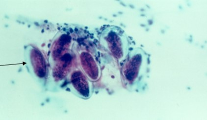
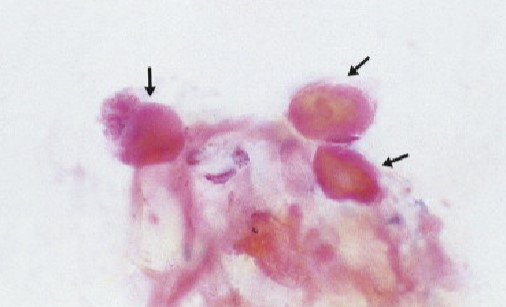

Microorganisms and Related Changes
On This Page
Overview
Cytology is specific in the recognition of several organisms, but microbiological cultures are more specific and considered the gold standard. Organisms may be present with or without clinical inflammatory response. They include bacterial, fungal, viral and parasitic infections.
Normal Bacterial Flora
- Nonpathogenic and causes no symptoms
- Main bacteria is Lactobacillus genus
- Gram positive, large rod-shaped
- Other bacteria are both aerobes and anaerobes:
- Aerobes: Staphylococcus, Corynebacterium
- Anaerobes: Prevotella, Eubacteria
- Typically colonization by 2-5 types
- Lactobacilli:
- Prevent infection by other organisms
- Prevent adhesion to vaginal cells by blocking adhesion receptors
- Compete for nutrients
- Produce organic acids, hydrogen peroxide, bacterions (broad spectrum antibacterial) and biosurfactants
- Thought to prevent cancers by interacting with superoxide anion, hydroxyl radicals, and hypochlorous acid
- Excessive cytolysis produces vaginosis
- Evident during: post-ovulatory phase, high progesterone effect, oral contraceptive use, diabetic women, menopause
- Vaginal pH is 4.0-4.5
- Caused by metabolism from glycogen to glucose to lactic acid
- Vaginal cells produce organic acids including lactic acid
- Also produce hydrogen peroxide which inhibits pathogens
- Production of peroxide and halides combines with hydrogen peroxidase to produce hypochlorous acid which inhibits bacteria and viruses
- Lactobacillus cannot compete if pH rises and die
- Semen increases pH of vagina, increases fertilization
- Menstrual flow increases alkalinity days 2-3
- Young girls have more alkaline pH
- The pH balance gets disrupted by antibiotics

Pathogenic Bacteria
Bacterial Vaginosis
- Cytology has low specificity for bacterial infections and culture is needed
- Typically occurs with rise in vaginal pH
- May (leukorrhea) or may not (vaginosis) cause host response
- Symptoms are thin, milky, foul fishy odor discharge (this is most common cause of discharge)
- Other tests are vaginal pH and amine-odor “whiff” test with addition of 10% potassium hydroxide (KOH)
- Positive whiff test is when strong fishy odor occurs with KOH
- Vaginal mucosa is absent of edema and irritation
- Predisposes to mucopurulent cervicitis, upper tract infection and PID
- Causes infertility, low birth weight babies, increased risk of STIs and carcinogenesis
- More common in sexually active women due to multiple partners, IUDs, spermicide
- Caused by numerous bacteria, most commonly Gardnerella vaginalis
- Patients are treated with antibiotics
- Cytologic pattern:
- Coccobacilli forming filmy, purple, powdery appearance coating background and surface of predominately squamous cells
- ”Clue cell” is term given to an epithelial cell coated in coccobacilli
- Usually no inflammatory cells present due to lack of interleukin-8 induction
- Infection can co-exist with other agents
Neisseria Gonorrhea
- Causative agent of Gonorrhea
- Symptoms include greenish-yellow discharge, anal itching, pain, frequent urination
- Diplococci bacteria usually found in the cytoplasm of macrophages
- Best appreciated in the cytoplasm of neutrophils
- Cytologic pattern is that of numerous polymorphonuclear leukocytes
- Degenerative squamous cells in the background

Actinomyces
- Gram positive bacteria observed in both vaginal tract and buccal cavity, uncommon incidental finding
- Often associated with prolonged IUD use and tampons
- Asymptomatic but can be invasive and lead to PID
- Pattern is a branching filamentous bacteria amorphous presenting as purple balls of thin filamentous structures (Termed “Gupta bodies” and “dust bunnies” by DeMay)
- Often have “companion” bacteria that are non-specific and obscure actinomyces
- Diagnostic filaments best appreciated from edges of the group
- Background contains neutrophils and macrophages
- Differential is lubricant, other bacteria and fungal agents

Leptothrix
- No longer reported under TBS due to not being pathogenic
- Similar morphologically to Actinomyces
- Thin, wavy hair-like structures with no spores
- Often associated with Trichomonas, pattern is called “spaghetti and meatballs”

Granuloma Venereum (Donovanosis)
- Sexually transmitted infection
- Caused by Klebsiella granulomatis (more common in developing tropical regions)
- Encapsulated coccobacilli that causes ulcerative lesions in the vagina and vulva
- Pattern is that of bean to safety-pin shaped, pink-orange structures commonly found in macrophages
- These are termed "Donovan bodies"
- Best observed with gram stain
Chlamydia trachomatis
- Most common bacterial sexually transmitted infection
- Commonly asymptomatic, may cause mucopurulent cervicitis
- Causative agent of pelvic inflammatory disease
- Leads to infertility
- Associated with neutrophil and lymphocytic cervicitis inflammatory reaction
- Pattern is that of predominantly lymphocytes
- Organism is recognized as brown-red round inclusion bodies
- These appear in the vacuolated cytoplasm of squamous metaplastic cells and endocervical cells (called "elementary bodies")
- No longer reported as per TBS
- Liquid-based molecular testing for Chlamydia as well as Gonorrhea is now performed using material in collection vial
Tuberculosis
- Caused by mycobacterium
- Stain positive with acid-fast stain, Ziehl-Neelsen
- Common in developing countries and typically presents in lungs
- Fallopian tube is most common site in female genital tract
- Cervical infection is secondary, and clinically mimics invasive cancer
- Granuloma “tubercules” found on histology
- Langhans multi-nucleated giant cells (specific to TB)
- Epithelioid histiocytes with elongated fibrillar cytoplasm, elongated nuclei, fine chromatin, and nucleoli
- Plasma cells
- Caseating “cheese-like” necrosis
- Cytology is not specific, requires culture and PCR
- Look-alikes are other bacteria, parasites and foreign bodies

Fungal Agents
Candida albicans/glabrata
- Most common fungal organism to infect vagina, vulva and cervix
- Not sexually transmitted, normal flora for some women
- Yeast infection common in reproductive years, pregnancy, and secretory phase
- Increases with pH, glycogen, or flora change due to:
- Immunosuppression
- Diabetes
- Antibiotics, chemotherapy, alkaline solutions
- May be asymptomatic or cause:
- Burning and itching
- Thick cheesy discharge
- White patchy area that can mimic leukoplakia
- Cytologic pattern:
- Spores are tiny and pink, blue or yellow
- Pseudohyphae stain red/pink or blue/grey and are segmented
- Squamous cells respond by increasing nuclear size and increasing hyperchromasia and chromatin clumping
- Increase in eosinophilia and keratinization of cytoplasm
- These changes mimic LSIL/HPV
- Cytoplasm may appear moth-eaten, “tissue paper appearance”
- Glabrata species usually presents with spores only that are smaller than albicans often with a halo
- On liquid-based, can see mature squamous cells “skewered” by pseudohyphae
- Differentials: cotton fibers, pollen, red blood cells
Parasitic Agents
Trichomonas vaginalis
- Most commonly sexually transmitted parasitic infection of the female genital tract and most common parasitic STD
- Multiple partners increases risk
- Increase in vaginal pH and injury predisposes individuals to trichomonas infections
- Males present with urethritis and prostatitis
- Individuals may be asymptomatic
- Clinical symptoms (within 30 days of infection):
- ”Strawberry cervix”: cervix grossly shows multiple red, granular patches
- Frothy, greenish-yellow leukorrhea
- Soreness and malodorous fishy odor
- Itching and irritation
- Both partners treated with antibiotics
- Cytologic appearance:
- Organism is elliptical, kite to pear-shaped
- Measures 8-30um
- Cytoplasm is blue, grey, or pink
- Single, round to oval, thin nucleus called “eye” tends to be tiny and eccentric (must see eye to diagnose)
- Red-brown granules may be identified on surface of cytoplasm
- Flagella may be present, more often on LBC
- Squamous cells develop polychromatic cytoplasm
- Cytoplasm appears moth-eaten
- Peri-nuclear halos are hallmark of trich infection
- Background is proteinaceous and dirty, mimicking tumor diathesis
Entamoeba histolytica
- Amoeba found more commonly where the disease is endemic
- Organism measures 12-40 um
- Round to oval in shape with basophilic to grey cytoplasm with hazy cytoplasmic borders
- Numerous small nuclei that are eccentric are found in cytoplasm
- Cytoplasm often contains ingested red blood cells
- Background of the smear contains necrotic basophilic granular deposits and large numbers of neutrophils
- Periodic-acid Schiff (PAS) or acid phosphatase stains are useful in their identification

Schistosoma
- Commonly found in tropical countries, especially African nations
- Gross hematuria
- Associated with walking in rivers and streams
- Large, blue-purple oval measuring 100 x 60 um
- Oval in shape with a chitinous shell and rigid spine running down the back of the shell
- Schistosoma mansoni has a single lateral spur and Schistosoma haematobium has a short terminal spine


Toxoplasma gondii
- Infection may be acquired or congenital
- Intracellular parasite, can be found in any cell’s cytoplasm, often in vacuoles
- Oval to crescent shaped, stains red-orange on Pap stain
- Measures 3-7um
- Slightly curved organism found in cytoplasmic vacuoles
- Can be found in cyst-like structures which measure 40-120um
- Background is often inflamed
Enterobius vermicularis
- Commonly called pinworms
- Associated with poor hygiene and is highly contagious
- More common in young children
- Round worms that infect the large intestines and deposit their eggs perianally
- Causes intense peri-anal and perineal itching
- Ova (eggs), oval shaped and measure 50-60 um by 20-30 um with thick double shell and yellow-brown in color
- Differential is food contaminant

Viruses
Herpes Simplex
- Common infection
- HSV-1 and HSV-2 are both genital infections that are cytologically identical
- Causes vesicular ulcers in cervix, vagina, vulva, and peri-anal region
- Imperative that it is identified in smears from pregnant women
- Virus shedding inside vaginal canal
- Herpes neonatorum: fatal CNS infection
- Caesarean section performed on women with active infection
- Pap test is not a reliable test
- Serological test is gold standard
- Cytologic pattern:
- Nucleus displays “3 M’s”:
- Multi-nucleation
- Molding (Nuclear)
- Margination (of chromatin)
- Nucleus may be mononucleated (mimicking HSIL) but more commonly multi-nucleated
- Chromatin moves (margination) to nuclear membrane, making membrane appear thicker
- Nucleus appears glassy
- Inclusion called “Cowdry Type A bodies” may be identified in the nucleus
- Eosinophilic and surrounded by a halo
- Background is non-specific
- Differentials: squamous intraepithelial lesion, multinucleated endocervical cells
Cytomegalovirus
- Infects all cell types, but prefers endocervical cells over squamous cells
- Member of the herpes family and DNA virus
- Patients are asymptomatic
- Common in HIV+ women
- Malignancy can predispose individuals to CMV infection
- Cytomegaly = increase in cell size
- Cytologic pattern is that of a large basophilic intra-nuclear inclusion surrounded by a prominent halo
- Multi-nucleation may occur
- Small cytoplasmic inclusions are also commonly observed
- Gives the cells an “owls eye” appearance
Molluscum contagiosum
- Pox virus
- Affects skin, presenting as papillomatous skin lesions
- Seen as parabasal cells with large, eosinophilic intracytoplasmic inclusion (molluscum body) and degenerated nuclei

References
- Author. Title of article. Journal Name. Year;Volume(Issue):Pages.
- Author. Title of second article. Journal Name. Year;Volume(Issue):Pages.